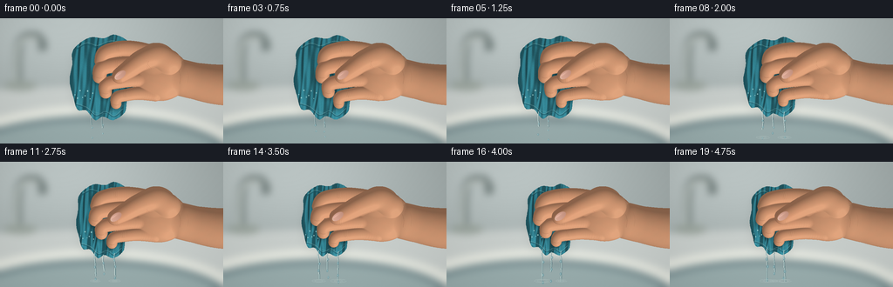
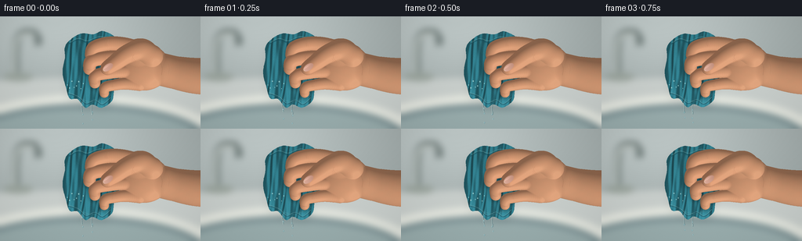
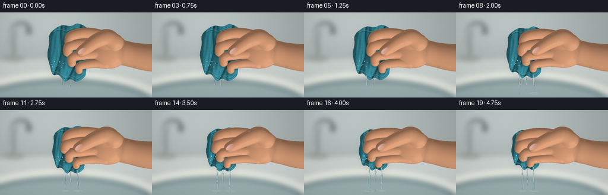
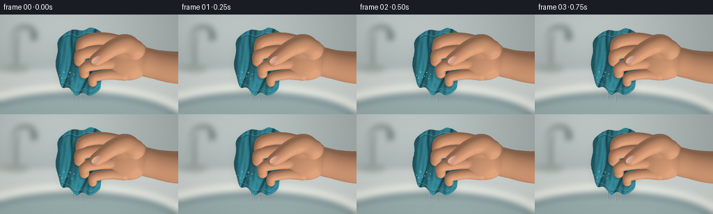

CODING AGENTS AS PIXEL WORLD MODELS
traex/GPT-6.1-Sol · mechanics_0018
点击播放 · 原生 RGB 像素
逐轮保存的候选
回放视频、检查图与代码变化。
每份候选均可单独播放。实际图片检查记录在下方工具轨迹中。
候选 01播放与检查图
点击播放 · 原生 RGB 像素


展开代码变化
--- 上一保存版本
+++ 本次保存版本
@@ -0,0 +1,253 @@
+from pathlib import Path
+import numpy as np
+from PIL import Image, ImageDraw, ImageFilter
+import artifact_io
+
+ROOT = Path(__file__).resolve().parent
+W,H,S = 256,144,3
+WW,HH=W*S,H*S
+Y,X=np.mgrid[:HH,:WW].astype(np.float32)/S
+rng=np.random.default_rng(8127)
+noise=rng.normal(0,1,(HH,WW)).astype(np.float32)
+
+def curve(points, steps=12, closed=False):
+ pts=np.array(points,float)
+ if closed: q=np.vstack([pts[-1],pts,pts[0],pts[1]])
+ else: q=np.vstack([pts[0],pts,pts[-1]])
+ out=[]
+ for j in range(1,len(q)-2):
+ a,b,c,d=q[j-1:j+3]
+ for t in np.linspace(0,1,steps,endpoint=False):
+ out.append(.5*((2*b)+(-a+c)*t+(2*a-5*b+4*c-d)*t*t+(-a+3*b-3*c+d)*t*t*t))
+ if not closed: out.append(pts[-1])
+ return np.array(out)
+
+def drawcurve(draw,pts,fill,width=1):
+ pp=curve(pts,14)
+ draw.line([tuple(q*S) for q in pp], fill=fill,width=max(1,round(width*S)))
+
+def background():
+ # Soft-focus porcelain basin, countertop, and a distant chrome mixer.
+ a=np.zeros((HH,WW,3),np.float32)
+ g=.9*np.exp(-((X-68)/140)**2-((Y-8)/90)**2)
+ for k,base in enumerate([161,171,170]):a[:,:,k]=base+35*g-10*Y/H
+ im=Image.fromarray(np.uint8(np.clip(a,0,255))).convert('RGB')
+ d=ImageDraw.Draw(im)
+ d.polygon([(0,82*S),(WW,69*S),(WW,HH),(0,HH)],fill=(201,207,204))
+ d.ellipse((-67*S,100*S,283*S,220*S),fill=(229,232,224))
+ d.ellipse((-48*S,112*S,266*S,208*S),fill=(116,138,142))
+ d.ellipse((-40*S,118*S,259*S,205*S),fill=(153,173,173))
+ # Background faucet is deliberately out of the focal plane.
+ drawcurve(d,[(20,77),(21,38),(27,22),(46,22),(49,37)],(119,131,129),10)
+ drawcurve(d,[(18,74),(20,36),(28,24),(43,23)],(225,232,226),3)
+ d.ellipse((4*S,72*S,42*S,83*S),fill=(155,165,158))
+ im=im.filter(ImageFilter.GaussianBlur(4*S))
+ arr=np.asarray(im).astype(np.float32)
+ arr+=noise[:,:,None]*.45
+ return np.clip(arr,0,255)
+
+BG=background()
+
+def cloth(p):
+ cx=118+3*p; cy=70-2*p; sx=1-.24*p; sy=1-.18*p
+ def trans(x,y): return (cx+(x-118)*sx,cy+(y-70)*sy)
+ points=[(91,29),(104,22),(119,23),(132,19),(149,28),(158,43),(155,72),(146,93),
+ (143,108),(130,117),(118,113),(109,117),(99,106),(89,105),(84,90),(80,72),(83,53),(83,39)]
+ pts=[trans(*q) for q in points]
+ mask=Image.new('L',(WW,HH));d=ImageDraw.Draw(mask)
+ d.polygon([tuple(q*S) for q in curve(pts,12,True)],fill=255)
+ m=np.asarray(mask)/255.
+ u=(X-cx)/sx+118; v=(Y-cy)/sy+70
+ # Dense, compressed longitudinal folds and a soft terry pile.
+ folds=(np.sin((u-80)*.29 + .038*(v-68)+.6*np.sin(v*.055))+
+ .42*np.sin(u*.60-v*.075)+.22*np.sin(u*.99+v*.11))
+ crease=np.power(np.maximum(0,-np.sin(u*.31+.04*v+.55*np.sin(v*.055))),8)
+ bulge=np.maximum(0,1-((u-121)/42)**2-((v-66)/61)**2)**.7
+ z=4+12*bulge+(2.4+1.9*p)*folds-3*crease
+ zy,zx=np.gradient(z,1/S)
+ norm=np.sqrt(1+zx*zx+zy*zy)
+ lam=np.clip((-.50*zx-.56*zy+.65)/norm,0,1)
+ shade=.64+.47*lam-.12*crease
+ # Tiny loops have paired light/dark fibers, never a flat fill.
+ weave=(np.sin(u*8.8+.7*np.sin(v*2.9))*np.sin(v*8.4)+.4*np.sin(u*15+v*9))
+ tex=noise*1.9+weave*2.4
+ a=np.stack([51*shade+tex,130*shade+tex,145*shade+tex],axis=-1)
+ # Damp folds retain a cool glassy specular shine.
+ sheen=9*np.maximum(0,lam-.7)**3/.027
+ a+=sheen[:,:,None]*np.array([.75,.96,1.0])
+ im=Image.fromarray(np.uint8(np.clip(a,0,255))).convert('RGBA')
+ det=Image.new('RGBA',(WW,HH));dd=ImageDraw.Draw(det)
+ # Loosely rolled, hemmed lower edge helps the object read as fabric.
+ hem=[trans(*q) for q in [(87,99),(99,103),(110,112),(121,108),(131,113),(141,105)]]
+ drawcurve(dd,hem,(22,72,87,115),1.8)
+ drawcurve(dd,[(x,y-.9) for x,y in hem],(125,184,184,120),.65)
+ # Rolled upper fold.
+ drawcurve(dd,[trans(*q) for q in [(88,35),(99,30),(112,33),(124,28),(139,29)]],(24,80,92,125),1.9)
+ drawcurve(dd,[trans(*q) for q in [(90,33),(100,28),(112,31),(126,26),(139,27)]],(137,192,187,120),.7)
+ for j in range(49):
+ xx=88+j*1.1; yy=102+7*np.sin((xx-98)*.08)
+ x,y=trans(xx,yy)
+ dd.line([(x*S,y*S),((x+.45)*S,(y+1.1)*S)], fill=(139,186,181,80),width=1)
+ im=Image.alpha_composite(im,det)
+ return np.asarray(im)[:,:,:3].astype(float),m,z,trans
+
+def softmax_depth(dst,src,k=2):
+ valid=(src>-90)
+ old=dst.copy()
+ both=valid & (old>-90)
+ h=np.maximum(k-np.abs(old-src),0)/k
+ dst[valid]=np.maximum(old[valid],src[valid])
+ dst[both]+=h[both]**2*k*.25
+
+def sphere_field(zmap,x,y,z,r,ry=None,rz=None,k=2):
+ ry=r if ry is None else ry; rz=r if rz is None else rz
+ x0=max(0,int((x-r-2)*S));x1=min(WW,int((x+r+2)*S)+1)
+ y0=max(0,int((y-ry-2)*S));y1=min(HH,int((y+ry+2)*S)+1)
+ if x1<=x0 or y1<=y0:return
+ r2=((X[y0:y1,x0:x1]-x)/r)**2+((Y[y0:y1,x0:x1]-y)/ry)**2
+ zz=np.where(r2<1,z+rz*np.sqrt(np.clip(1-r2,0,1)),-100)
+ softmax_depth(zmap[y0:y1,x0:x1],zz,k)
+
+def tube(zmap,pts,radii,k=1.5):
+ pp=curve(pts,8)
+ rr=np.interp(np.linspace(0,len(radii)-1,len(pp)),np.arange(len(radii)),radii)
+ for (x,y,z),r in zip(pp,rr):sphere_field(zmap,x,y,z,r,k=k)
+
+def hand(p):
+ z=np.full((HH,WW),-100,np.float32)
+ # The wrist and forearm leave the frame to the right.
+ tube(z,[(281,77,11),(249,76,11),(224,72,12),(207,68,13)],[25,23,21,21],2.7)
+ sphere_field(z,183-2*p,65-2*p,17,34,30-2*p,20,k=4)
+ sphere_field(z,179,49,21,23,21,18,k=4)
+ # Flexion brings the fingertips inwards, and reduces vertical spacing.
+ paths=[]
+ base=[[(182,43,23),(158,36,25),(137,35,28),(120,40,30),(116,49,29)],
+ [(183,58,22),(159,53,26),(136,53,29),(117,57,32),(114,67,30)],
+ [(182,73,21),(160,70,25),(139,72,29),(122,76,32),(121,85,30)],
+ [(178,87,21),(159,86,25),(145,88,28),(134,91,31),(133,98,28)]]
+ for idx,b in enumerate(base):
+ pts=[]
+ for j,(x,y,zz) in enumerate(b):
+ f=j/4
+ xx=x-p*(7*f+1)
+ yy=65+(y-65)*(1-.19*p)-p*.8
+ pts.append((xx,yy,zz+p*1.3*f))
+ r=[10,9.4,9.1,8.8,7.9] if idx<2 else ([9.2,8.7,8.3,7.8,7.2] if idx==2 else [8.4,7.7,7.1,6.8,6.2])
+ tube(z,pts,r,1.4)
+ paths.append(pts)
+ # Opposing thumb, in front of the folded fingers.
+ thumb=[(193-2*p,51,28),(179-2*p,43,34),(161-3*p,49,39),(147-6*p,59-2*p,44),(137-8*p,66-3*p,43)]
+ tube(z,thumb,[15,13.5,11.9,10.3,8.8],3)
+ return z,paths,thumb
+
+def nail_overlay(arr,z,cx,cy,angle,length=8,width=4):
+ # Delicate, translucent thumbnail on the flattened distal phalanx.
+ dx=X-cx;dy=Y-cy
+ co=np.cos(angle);si=np.sin(angle)
+ u=co*dx+si*dy;v=-si*dx+co*dy
+ rr=(u/length)**2+(v/width)**2
+ alpha=np.clip((1-rr)*7,0,1)*.91
+ alpha*=z>38
+ pink=np.array([205.,156.,139.])[None,None,:]+(4-.6*v-2*u)[:,:,None]
+ spec=np.exp(-((u+2)/5)**2-((v+1.7)/.8)**2)*21
+ pink+=spec[:,:,None]
+ tip=np.clip((-u-length+2.0)*1.2,0,1)*.45
+ pink=pink*(1-tip[:,:,None])+np.array([227,207,186])*tip[:,:,None]
+ arr=arr*(1-alpha[:,:,None])+pink*alpha[:,:,None]
+ return arr
+
+def render(t):
+ p=(t*t*(3-2*t))*.98
+ a=BG.copy()
+ cl,cm,cz,trans=cloth(p)
+ # Soft shadow under the wet bundle and the hand.
+ shadow=Image.fromarray(np.uint8(cm*75)).filter(ImageFilter.GaussianBlur(5*S))
+ sh=np.roll(np.asarray(shadow)/255.,5*S,axis=0)
+ a*=1-sh[:,:,None]*.22
+ a=a*(1-cm[:,:,None])+cl*cm[:,:,None]
+ z,paths,thumb=hand(p)
+ skin=z>-90
+ sm=Image.fromarray(np.uint8(skin)*255).filter(ImageFilter.GaussianBlur(2*S))
+ sh=np.roll(np.roll(np.asarray(sm)/255.,2*S,axis=0),-1*S,axis=1)*cm
+ a*=1-sh[:,:,None]*.29
+ # Normals and warm subsurface shading on the fingers.
+ zz=np.where(skin,z,0)
+ zy,zx=np.gradient(zz,1/S)
+ nn=np.sqrt(zx*zx+zy*zy+1)
+ lam=np.clip((-.47*zx-.62*zy+.70)/nn,0,1)
+ diffuse=.65+.39*lam
+ col=np.zeros_like(a)
+ tint=np.exp(-((X-130)/28)**2-((Y-62)/29)**2)
+ fine=noise*.65 + .3*np.sin(X*11.4+Y*6.8)
+ for k,base in enumerate([211,153,116]):
+ col[:,:,k]=base*diffuse+fine + (2 if k==0 else -2)*tint
+ # Broad oily highlights, with less shine than the wet towel.
+ spec=8*np.maximum(0,lam-.87)**2/.0169
+ col+=spec[:,:,None]*np.array([1.0,.91,.78])
+ # Small natural mottling, barely visible in the final image.
+ col[:,:,0]+=1.4*np.sin(X*.31+np.sin(Y*.29))*np.sin(Y*.47)
+ a=np.where(skin[:,:,None],col,a)
+ # Skin folds drawn only within the surface, shaded rather than outlined.
+ details=Image.new('RGBA',(WW,HH));d=ImageDraw.Draw(details)
+ for idx,pts in enumerate(paths):
+ joint=pts[2];x,y,_=joint
+ for off in [-1.5,0,1.8]:
+ drawcurve(d,[(x+off-1,y-5),(x+off-2,y-1),(x+off-1,y+3)],(112,69,46,60 if off==0 else 30),.45)
+ drawcurve(d,[(x+off-.35,y-5),(x+off-1.3,y-1),(x+off-.3,y+3)],(244,191,150,30),.35)
+ ex,ey,_=pts[-1]
+ drawcurve(d,[(ex-3.1,ey+1),(ex,ey+2),(ex+3,ey+1.5)],(113,64,47,65),.45)
+ for off in [0,2.3,4.5]:
+ drawcurve(d,[(166-4*p+off,49),(165-4*p+off,53),(169-4*p+off,58)],(127,80,53,52),.48)
+ drawcurve(d,[(205,60),(207,67),(206,75)],(124,83,60,43),.55)
+ drawcurve(d,[(214,58),(216,66),(215,74)],(125,83,58,35),.45)
+ ov=np.asarray(details).astype(float);al=ov[:,:,3]/255*skin
+ # Hide underlying finger creases where the thumb crosses them.
+ al*=~((X<168)&(X>135-8*p)&(Y<64)&(Y>43))
+ a=a*(1-al[:,:,None])+ov[:,:,:3]*al[:,:,None]
+ tx,ty,_=thumb[-1]
+ a=nail_overlay(a,z,tx+.7,ty-.8,-.62,7.6,4.2)
+ # Clear water gathers underneath the hem, then becomes several thin jets.
+ water=Image.new('RGBA',(WW,HH));d=ImageDraw.Draw(water)
+ flow=.16+.84*p
+ for j,origin in enumerate([(105,110),(117,114),(132,112)]):
+ ox,oy=trans(*origin)
+ ox+=.5*np.sin(t*14+j*2)
+ strength=flow*(1 if j!=1 else .8)
+ if j==2 and p<.2:continue
+ reach=7+30*strength
+ if j==1:reach*=.75
+ end=min(138,oy+reach)
+ points=[(ox,oy-1),(ox-.7,oy+5),(ox+.3*np.sin(t*21+j),oy+12),(ox+1.1*np.sin(t*12+j),end)]
+ drawcurve(d,points,(56,98,107,125),.9+strength*.9)
+ drawcurve(d,[(x-.38,y) for x,y in points],(223,243,238,190),.4+strength*.35)
+ for k in range(3):
+ phase=((t*3.4+k*.39+j*.17)%1)
+ yy=oy+4+phase*max(4,140-oy)
+ xx=ox+np.sin(j*8+k+t*8)*.85
+ if yy>140:continue
+ rr=.6+strength*.5
+ d.ellipse(((xx-rr)*S,(yy-1.5*rr)*S,(xx+rr)*S,(yy+1.5*rr)*S),fill=(100,153,163,155))
+ d.line(((xx-.25)*S,(yy-.7)*S,(xx-.2)*S,(yy+.5)*S),fill=(232,251,248,220),width=1)
+ # Small ripples where the runoff lands in the sink.
+ if end>127:
+ for k in range(2):
+ r=2.3+((t*13+j*2+k*3)%7)
+ d.arc(((ox-r)*S,(137-r*.19)*S,(ox+r)*S,(137+r*.19)*S),0,330,fill=(219,237,232,80),width=1)
+ # Wet beads remaining on the cloth at the squeeze boundary.
+ for j in range(8):
+ xx,yy=trans(86+j*2.9,88+5*np.sin(j*2.3))
+ if not (0<int(xx*S)<WW and 0<int(yy*S)<HH):continue
+ if skin[int(yy*S),int(xx*S)]:continue
+ r=.4+.25*np.sin(j)**2
+ d.ellipse(((xx-r)*S,(yy-r)*S,(xx+r)*S,(yy+r*1.4)*S),fill=(184,229,226,170))
+ ov=np.asarray(water).astype(float);al=ov[:,:,3]/255
+ a=a*(1-al[:,:,None])+ov[:,:,:3]*al[:,:,None]
+ # Slight photographic vignette and fine sensor grain.
+ vig=1-.09*((X-129)**2/(175**2)+(Y-71)**2/(122**2))
+ a*=vig[:,:,None]
+ im=Image.fromarray(np.uint8(np.clip(a,0,255)))
+ return np.asarray(im.resize((W,H),Image.Resampling.LANCZOS))
+
+if __name__=='__main__':
+ frames=np.stack([render(i/19) for i in range(20)])
+ artifact_io.save(frames,ROOT)
候选 02播放与检查图
点击播放 · 原生 RGB 像素


展开代码变化
--- 上一保存版本
+++ 本次保存版本
@@ -9,6 +9,7 @@
Y,X=np.mgrid[:HH,:WW].astype(np.float32)/S
rng=np.random.default_rng(8127)
noise=rng.normal(0,1,(HH,WW)).astype(np.float32)
+pile=np.asarray(Image.fromarray(np.uint8(rng.uniform(0,255,(H*2,W*2)))).resize((WW,HH),Image.Resampling.BILINEAR)).astype(float)/255-.5
def curve(points, steps=12, closed=False):
pts=np.array(points,float)
@@ -49,7 +50,7 @@
BG=background()
def cloth(p):
- cx=118+3*p; cy=70-2*p; sx=1-.24*p; sy=1-.18*p
+ cx=118+3*p; cy=70-2*p; sx=1-.28*p; sy=1-.30*p
def trans(x,y): return (cx+(x-118)*sx,cy+(y-70)*sy)
points=[(91,29),(104,22),(119,23),(132,19),(149,28),(158,43),(155,72),(146,93),
(143,108),(130,117),(118,113),(109,117),(99,106),(89,105),(84,90),(80,72),(83,53),(83,39)]
@@ -59,21 +60,21 @@
m=np.asarray(mask)/255.
u=(X-cx)/sx+118; v=(Y-cy)/sy+70
# Dense, compressed longitudinal folds and a soft terry pile.
- folds=(np.sin((u-80)*.29 + .038*(v-68)+.6*np.sin(v*.055))+
- .42*np.sin(u*.60-v*.075)+.22*np.sin(u*.99+v*.11))
- crease=np.power(np.maximum(0,-np.sin(u*.31+.04*v+.55*np.sin(v*.055))),8)
+ phase=(u-80)*.23+.045*(v-68)+.85*np.sin(v*.065)+.65*np.sin(u*.075)
+ folds=(np.sin(phase)+.36*np.sin(u*.52-v*.075+np.sin(v*.095))+.16*np.sin(u*.88+v*.13))
+ crease=np.power(np.maximum(0,-np.sin(phase)),8)
bulge=np.maximum(0,1-((u-121)/42)**2-((v-66)/61)**2)**.7
- z=4+12*bulge+(2.4+1.9*p)*folds-3*crease
+ z=4+12*bulge+(1.8+1.5*p)*folds-3*crease
zy,zx=np.gradient(z,1/S)
norm=np.sqrt(1+zx*zx+zy*zy)
lam=np.clip((-.50*zx-.56*zy+.65)/norm,0,1)
shade=.64+.47*lam-.12*crease
# Tiny loops have paired light/dark fibers, never a flat fill.
weave=(np.sin(u*8.8+.7*np.sin(v*2.9))*np.sin(v*8.4)+.4*np.sin(u*15+v*9))
- tex=noise*1.9+weave*2.4
+ tex=noise*1.9+weave*2.4+pile*14
a=np.stack([51*shade+tex,130*shade+tex,145*shade+tex],axis=-1)
# Damp folds retain a cool glassy specular shine.
- sheen=9*np.maximum(0,lam-.7)**3/.027
+ sheen=3*np.maximum(0,lam-.7)**3/.027
a+=sheen[:,:,None]*np.array([.75,.96,1.0])
im=Image.fromarray(np.uint8(np.clip(a,0,255))).convert('RGBA')
det=Image.new('RGBA',(WW,HH));dd=ImageDraw.Draw(det)
可观测工具轨迹
实际执行的命令与返回图片。
命令 1exit 0
/bin/bash -lc 'ls -la && cat prompt.txt && cat GENERATION_RULES.md && cat task_spec.json'
命令 2exit 0
/bin/bash -lc "cat artifact_io.py && python - <<'PY'
import numpy, PIL
print('numpy', numpy.__version__)
PY"命令 3exit 0
/bin/bash -lc "cat > generate.py <<'PY'
from pathlib import Path
import numpy as np
from PIL import Image, ImageDraw, ImageFilter
import artifact_io
ROOT = Path(__file__).resolve().parent
W,H,S = 256,144,3
WW,HH=W*S,H*S
Y,X=np.mgrid[:HH,:WW].astype(np.float32)/S
rng=np.random.default_rng(8127)
noise=rng.normal(0,1,(HH,WW)).astype(np.float32)
def curve(points, steps=12, closed=False):
pts=np.array(points,float)
if closed: q=np.vstack([pts[-1],pts,pts[0],pts[1]])
else: q=np.vstack([pts[0],pts,pts[-1]])
out=[]
for j in range(1,len(q)-2):
a,b,c,d=q[j-1:j+3]
for t in np.linspace(0,1,steps,endpoint=False):
out.append(.5*((2*b)+(-a+c)*t+(2*a-5*b+4*c-d)*t*t+(-a+3*b-3*c+d)*t*t*t))
if not closed: out.append(pts[-1])
return np.array(out)
def drawcurve(draw,pts,fill,width=1):
pp=curve(pts,14)
draw.line([tuple(q*S) for q in pp], fill=fill,width=max(1,round(width*S)))
def background():
# Soft-focus porcelain basin, countertop, and a distant chrome mixer.
a=np.zeros((HH,WW,3),np.float32)
g=.9*np.exp(-((X-68)/140)**2-((Y-8)/90)**2)
for k,base in enumerate([161,171,170]):a[:,:,k]=base+35*g-10*Y/H
im=Image.fromarray(np.uint8(np.clip(a,0,255))).convert('RGB')
d=ImageDraw.Draw(im)
d.polygon([(0,82*S),(WW,69*S),(WW,HH),(0,HH)],fill=(201,207,204))
d.ellipse((-67*S,100*S,283*S,220*S),fill=(229,232,224))
d.ellipse((-48*S,112*S,266*S,208*S),fill=(116,138,142))
d.ellipse((-40*S,118*S,259*S,205*S),fill=(153,173,173))
# Background faucet is deliberately out of the focal plane.
drawcurve(d,[(20,77),(21,38),(27,22),(46,22),(49,37)],(119,131,129),10)
drawcurve(d,[(18,74),(20,36),(28,24),(43,23)],(225,232,226),3)
d.ellipse((4*S,72*S,42*S,83*S),fill=(155,165,158))
im=im.filter(ImageFilter.GaussianBlur(4*S))
arr=np.asarray(im).astype(np.float32)
arr+=noise[:,:,None]*.45
return np.clip(arr,0,255)
BG=background()
def cloth(p):
cx=118+3*p; cy=70-2*p; sx=1-.24*p; sy=1-.18*p
def trans(x,y): return (cx+(x-118)*sx,cy+(y-70)*sy)
points=[(91,29),(104,22),(119,23),(132,19),(149,28),(158,43),(155,72),(146,93),
(143,108),(130,117),(118,113),(109,117),(99,106),(89,105),(84,90),(80,72),(83,53),(83,39)]
pts=[trans(*q) for q in points]
mask=Image.new('L',(WW,HH));d=ImageDraw.Draw(mask)
d.polygon([tuple(q*S) for q in curve(pts,12,True)],fill=255)
m=np.asarray(mask)/255.
u=(X-cx)/sx+118; v=(Y-cy)/sy+70
# Dense, compressed longitudinal folds and a soft terry pile.
folds=(np.sin((u-80)*.29 + .038*(v-68)+.6*np.sin(v*.055))+
.42*np.sin(u*.60-v*.075)+.22*np.sin(u*.99+v*.11))
crease=np.power(np.maximum(0,-np.sin(u*.31+.04*v+.55*np.sin(v*.055))),8)
bulge=np.maximum(0,1-((u-121)/42)**2-((v-66)/61)**2)**.7
z=4+12*bulge+(2.4+1.9*p)*folds-3*crease
zy,zx=np.gradient(z,1/S)
norm=np.sqrt(1+zx*zx+zy*zy)
lam=np.clip((-.50*zx-.56*zy+.65)/norm,0,1)
shade=.64+.47*lam-.12*crease
# Tiny loops have paired light/dark fibers, never a flat fill.
weave=(np.sin(u*8.8+.7*np.sin(v*2.9))*np.sin(v*8.4)+.4*np.sin(u*15+v*9))
tex=noise*1.9+weave*2.4
a=np.stack([51*shade+tex,130*shade+tex,145*shade+tex],axis=-1)
# Damp folds retain a cool glassy specular shine.
sheen=9*np.maximum(0,lam-.7)**3/.027
a+=sheen[:,:,None]*np.array([.75,.96,1.0])
im=Image.fromarray(np.uint8(np.clip(a,0,255))).convert('RGBA')
det=Image.new('RGBA',(WW,HH));dd=ImageDraw.Draw(det)
# Loosely rolled, hemmed lower edge helps the object read as fabric.
hem=[trans(*q) for q in [(87,99),(99,103),(110,112),(121,108),(131,113),(141,105)]]
drawcurve(dd,hem,(22,72,87,115),1.8)
drawcurve(dd,[(x,y-.9) for x,y in hem],(125,184,184,120),.65)
# Rolled upper fold.
drawcurve(dd,[trans(*q) for q in [(88,35),(99,30),(112,33),(124,28),(139,29)]],(24,80,92,125),1.9)
drawcurve(dd,[trans(*q) for q in [(90,33),(100,28),(112,31),(126,26),(139,27)]],(137,192,187,120),.7)
for j in range(49):
xx=88+j*1.1; yy=102+7*np.sin((xx-98)*.08)
x,y=trans(xx,yy)
dd.line([(x*S,y*S),((x+.45)*S,(y+1.1)*S)], fill=(139,186,181,80),width=1)
im=Image.alpha_composite(im,det)
return np.asarray(im)[:,:,:3].astype(float),m,z,trans
def softmax_depth(dst,src,k=2):
valid=(src>-90)
old=dst.copy()
both=valid & (old>-90)
h=np.maximum(k-np.abs(old-src),0)/k
dst[valid]=np.maximum(old[valid],src[valid])
dst[both]+=h[both]**2*k*.25
def sphere_field(zmap,x,y,z,r,ry=None,rz=None,k=2):
ry=r if ry is None else ry; rz=r if rz is None else rz
x0=max(0,int((x-r-2)*S));x1=min(WW,int((x+r+2)*S)+1)
y0=max(0,int((y-ry-2)*S));y1=min(HH,int((y+ry+2)*S)+1)
if x1<=x0 or y1<=y0:return
r2=((X[y0:y1,x0:x1]-x)/r)**2+((Y[y0:y1,x0:x1]-y)/ry)**2
zz=np.where(r2<1,z+rz*np.sqrt(np.clip(1-r2,0,1)),-100)
softmax_depth(zmap[y0:y1,x0:x1],zz,k)
def tube(zmap,pts,radii,k=1.5):
pp=curve(pts,8)
rr=np.interp(np.linspace(0,len(radii)-1,len(pp)),np.arange(len(radii)),radii)
for (x,y,z),r in zip(pp,rr):sphere_field(zmap,x,y,z,r,k=k)
def hand(p):
z=np.full((HH,WW),-100,np.float32)
# The wrist and forearm leave the frame to the right.
tube(z,[(281,77,11),(249,76,11),(224,72,12),(207,68,13)],[25,23,21,21],2.7)
sphere_field(z,183-2*p,65-2*p,17,34,30-2*p,20,k=4)
sphere_field(z,179,49,21,23,21,18,k=4)
# Flexion brings the fingertips inwards, and reduces vertical spacing.
paths=[]
base=[[(182,43,23),(158,36,25),(137,35,28),(120,40,30),(116,49,29)],
[(183,58,22),(159,53,26),(136,53,29),(117,57,32),(114,67,30)],
[(182,73,21),(160,70,25),(139,72,29),(122,76,32),(121,85,30)],
[(178,87,21),(159,86,25),(145,88,28),(134,91,31),(133,98,28)]]
for idx,b in enumerate(base):
pts=[]
for j,(x,y,zz) in enumerate(b):
f=j/4
xx=x-p*(7*f+1)
yy=65+(y-65)*(1-.19*p)-p*.8
pts.append((xx,yy,zz+p*1.3*f))
r=[10,9.4,9.1,8.8,7.9] if idx<2 else ([9.2,8.7,8.3,7.8,7.2] if idx==2 else [8.4,7.7,7.1,6.8,6.2])
tube(z,pts,r,1.4)
paths.append(pts)
# Opposing thumb, in front of the folded fingers.
thumb=[(193-2*p,51,28),(179-2*p,43,34),(161-3*p,49,39),(147-6*p,59-2*p,44),(137-8*p,66-3*p,43)]
tube(z,thumb,[15,13.5,11.9,10.3,8.8],3)
return z,paths,thumb
def nail_overlay(arr,z,cx,cy,angle,length=8,width=4):
# Delicate, translucent thumbnail on the flattened distal phalanx.
dx=X-cx;dy=Y-cy
co=np.cos(angle);si=np.sin(angle)
u=co*dx+si*dy;v=-si*dx+co*dy
rr=(u/length)**2+(v/width)**2
alpha=np.clip((1-rr)*7,0,1)*.91
alpha*=z>38
pink=np.array([205.,156.,139.])[None,None,:]+(4-.6*v-2*u)[:,:,None]
spec=np.exp(-((u+2)/5)**2-((v+1.7)/.8)**2)*21
pink+=spec[:,:,None]
tip=np.clip((-u-length+2.0)*1.2,0,1)*.45
pink=pink*(1-tip[:,:,None])+np.array([227,207,186])*tip[:,:,None]
arr=arr*(1-alpha[:,:,None])+pink*alpha[:,:,None]
return arr
def render(t):
p=(t*t*(3-2*t))*.98
a=BG.copy()
cl,cm,cz,trans=cloth(p)
# Soft shadow under the wet bundle and the hand.
shadow=Image.fromarray(np.uint8(cm*75)).filter(ImageFilter.GaussianBlur(5*S))
sh=np.roll(np.asarray(shadow)/255.,5*S,axis=0)
a*=1-sh[:,:,None]*.22
a=a*(1-cm[:,:,None])+cl*cm[:,:,None]
z,paths,thumb=hand(p)
skin=z>-90
sm=Image.fromarray(np.uint8(skin)*255).filter(ImageFilter.GaussianBlur(2*S))
sh=np.roll(np.roll(np.asarray(sm)/255.,2*S,axis=0),-1*S,axis=1)*cm
a*=1-sh[:,:,None]*.29
# Normals and warm subsurface shading on the fingers.
zz=np.where(skin,z,0)
zy,zx=np.gradient(zz,1/S)
nn=np.sqrt(zx*zx+zy*zy+1)
lam=np.clip((-.47*zx-.62*zy+.70)/nn,0,1)
diffuse=.65+.39*lam
col=np.zeros_like(a)
tint=np.exp(-((X-130)/28)**2-((Y-62)/29)**2)
fine=noise*.65 + .3*np.sin(X*11.4+Y*6.8)
for k,base in enumerate([211,153,116]):
col[:,:,k]=base*diffuse+fine + (2 if k==0 else -2)*tint
# Broad oily highlights, with less shine than the wet towel.
spec=8*np.maximum(0,lam-.87)**2/.0169
col+=spec[:,:,None]*np.array([1.0,.91,.78])
# Small natural mottling, barely visible in the final image.
col[:,:,0]+=1.4*np.sin(X*.31+np.sin(Y*.29))*np.sin(Y*.47)
a=np.where(skin[:,:,None],col,a)
# Skin folds drawn only within the surface, shaded rather than outlined.
details=Image.new('RGBA',(WW,HH));d=ImageDraw.Draw(details)
for idx,pts in enumerate(paths):
joint=pts[2];x,y,_=joint
for off in [-1.5,0,1.8]:
drawcurve(d,[(x+off-1,y-5),(x+off-2,y-1),(x+off-1,y+3)],(112,69,46,60 if off==0 else 30),.45)
drawcurve(d,[(x+off-.35,y-5),(x+off-1.3,y-1),(x+off-.3,y+3)],(244,191,150,30),.35)
ex,ey,_=pts[-1]
drawcurve(d,[(ex-3.1,ey+1),(ex,ey+2),(ex+3,ey+1.5)],(113,64,47,65),.45)
for off in [0,2.3,4.5]:
drawcurve(d,[(166-4*p+off,49),(165-4*p+off,53),(169-4*p+off,58)],(127,80,53,52),.48)
drawcurve(d,[(205,60),(207,67),(206,75)],(124,83,60,43),.55)
drawcurve(d,[(214,58),(216,66),(215,74)],(125,83,58,35),.45)
ov=np.asarray(details).astype(float);al=ov[:,:,3]/255*skin
# Hide underlying finger creases where the thumb crosses them.
al*=~((X<168)&(X>135-8*p)&(Y<64)&(Y>43))
a=a*(1-al[:,:,None])+ov[:,:,:3]*al[:,:,None]
tx,ty,_=thumb[-1]
a=nail_overlay(a,z,tx+.7,ty-.8,-.62,7.6,4.2)
# Clear water gathers underneath the hem, then becomes several thin jets.
water=Image.new('RGBA',(WW,HH));d=ImageDraw.Draw(water)
flow=.16+.84*p
for j,origin in enumerate([(105,110),(117,114),(132,112)]):
ox,oy=trans(*origin)
ox+=.5*np.sin(t*14+j*2)
strength=flow*(1 if j"'!=1 else .8)
if j==2 and p<.2:continue
reach=7+30*strength
if j==1:reach*=.75
end=min(138,oy+reach)
points=[(ox,oy-1),(ox-.7,oy+5),(ox+.3*np.sin(t*21+j),oy+12),(ox+1.1*np.sin(t*12+j),end)]
drawcurve(d,points,(56,98,107,125),.9+strength*.9)
drawcurve(d,[(x-.38,y) for x,y in points],(223,243,238,190),.4+strength*.35)
for k in range(3):
phase=((t*3.4+k*.39+j*.17)%1)
yy=oy+4+phase*max(4,140-oy)
xx=ox+np.sin(j*8+k+t*8)*.85
if yy>140:continue
rr=.6+strength*.5
d.ellipse(((xx-rr)*S,(yy-1.5*rr)*S,(xx+rr)*S,(yy+1.5*rr)*S),fill=(100,153,163,155))
d.line(((xx-.25)*S,(yy-.7)*S,(xx-.2)*S,(yy+.5)*S),fill=(232,251,248,220),width=1)
# Small ripples where the runoff lands in the sink.
if end>127:
for k in range(2):
r=2.3+((t*13+j*2+k*3)%7)
d.arc(((ox-r)*S,(137-r*.19)*S,(ox+r)*S,(137+r*.19)*S),0,330,fill=(219,237,232,80),width=1)
# Wet beads remaining on the cloth at the squeeze boundary.
for j in range(8):
xx,yy=trans(86+j*2.9,88+5*np.sin(j*2.3))
if not (0<int(xx*S)<WW and 0<int(yy*S)<HH):continue
if skin[int(yy*S),int(xx*S)]:continue
r=.4+.25*np.sin(j)**2
d.ellipse(((xx-r)*S,(yy-r)*S,(xx+r)*S,(yy+r*1.4)*S),fill=(184,229,226,170))
ov=np.asarray(water).astype(float);al=ov[:,:,3]/255
a=a*(1-al[:,:,None])+ov[:,:,:3]*al[:,:,None]
# Slight photographic vignette and fine sensor grain.
vig=1-.09*((X-129)**2/(175**2)+(Y-71)**2/(122**2))
a*=vig[:,:,None]
im=Image.fromarray(np.uint8(np.clip(a,0,255)))
return np.asarray(im.resize((W,H),Image.Resampling.LANCZOS))
if __name__=='"'__main__':
frames=np.stack([render(i/19) for i in range(20)])
artifact_io.save(frames,ROOT)
PY
python generate.py"命令 4exit 0
/bin/bash -lc "python - <<'PY'
p='generate.py'
s=open(p).read().replace('noise=rng.normal(0,1,(HH,WW)).astype(np.float32)','noise=rng.normal(0,1,(HH,WW)).astype(np.float32)\\npile=np.asarray(Image.fromarray(np.uint8(rng.uniform(0,255,(H*2,W*2)))).resize((WW,HH),Image.Resampling.BILINEAR)).astype(float)/255-.5')
s=s.replace('sx=1-.24*p; sy=1-.18*p','sx=1-.28*p; sy=1-.30*p')
s=s.replace('folds=(np.sin((u-80)*.29 + .038*(v-68)+.6*np.sin(v*.055))+\\n .42*np.sin(u*.60-v*.075)+.22*np.sin(u*.99+v*.11))','phase=(u-80)*.23+.045*(v-68)+.85*np.sin(v*.065)+.65*np.sin(u*.075)\\n folds=(np.sin(phase)+.36*np.sin(u*.52-v*.075+np.sin(v*.095))+.16*np.sin(u*.88+v*.13))')
s=s.replace('np.sin(u*.31+.04*v+.55*np.sin(v*.055))','np.sin(phase)')
s=s.replace('(2.4+1.9*p)*folds','(1.8+1.5*p)*folds')
s=s.replace('tex=noise*1.9+weave*2.4','tex=noise*1.9+weave*2.4+pile*14')
s=s.replace('sheen=9*np.maximum','sheen=3*np.maximum')
open(p,'w').write(s)
PY
python generate.py
ls -lh pixels.npz index.html inspection.png frames/19.png"视觉工具实际返回图片 1

视觉工具实际返回图片 2

保存候选 2 份；完成命令 4 次；可验证图片返回 2 张。原始 API 响应与完整日志保留在本地。